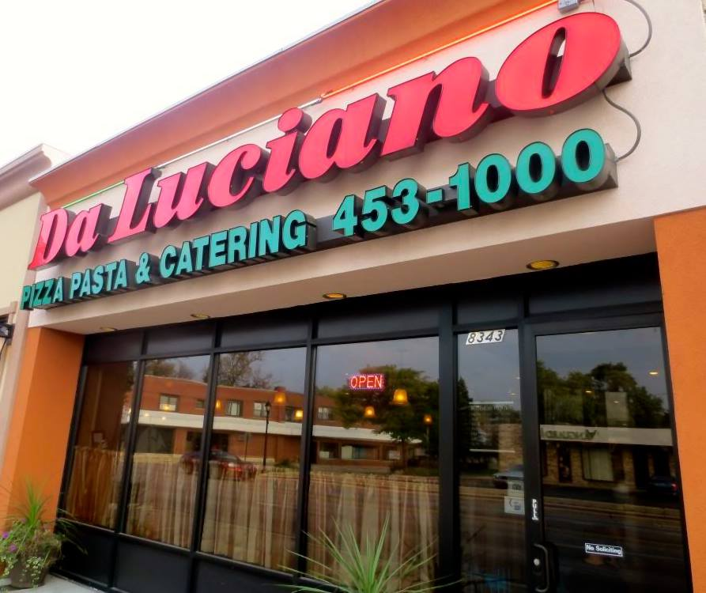

Da Luciano Pizzeria, 2019
Established in the fall of 2003, Da Luciano Pizza, Pasta and Catering, was not the first successful restaurant business for Luciano. Born and raised in Caccamo, Sicily, Luciano often dreamt of moving to the United States and opening a restaurant. He and his family moved to the United States in 1969, and he began working in restaurants. In 1983, Luciano's dreams were finally becoming reality as he was one of the owners of La Gondola Ristorante and La Gondola Pizza and Pasta in the Lakeview area for 20 years. He went on to sell La Gondola Pizza and Pasta when his son, Ignazio, became inspired to follow in his father's footsteps. It was through working at La Gondola as a teenager and young adult that Ignazio's interest in the restaurant business began to bloom and discussions about learning and going into business with his father began. From this point forward, there was no stopping this father-son team. Da Luciano Pizza, Pasta and Catering was established in November of 2003 in River Grove, IL, where it has been a hit with the locals.
(Da Lucianos, 2019)
Da Luciano, a cozy double storefront, has a busy pizza counter in front and a big main dining room next door. The specialties are pizza and pasta, available gluten-free, but regulars insist the Sicilian fish special ($21) is the must-order dish. The trout is lightly breaded then grilled, Sicilian-style, until crisp and smoky, and served with garlic and oil lemon sauce; it's also available gluten-free, upon request. Rosalia also revealed that the favorite stuffed artichoke is always made gluten-free. (Chicago tribune, 2017)